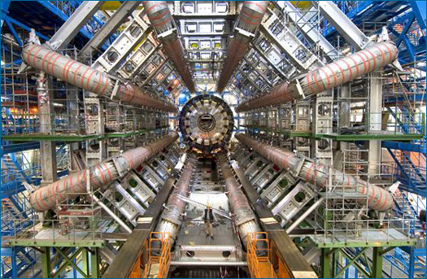

Some science can be done without much money at all. You can make careful observations of the sparrows in your backyard and do real scientific research on a shoestring, but many research topics in science are not so cheaply addressed. For example, scientists are eagerly awaiting the answers to key questions in particle physics, which they hope will come from a multi-billion dollar particle accelerator scheduled to be operational in 2009. Of course, most scientific research doesn't cost billions of dollars — but neither is it free.

This is just a small part of the Large Hadron Collider, a scientific instrument near Geneva, Switzerland. It is the result of a collaboration between more than 8000 physicists and hundreds of organizations from all over the world. It didn't come cheap.
THE ENERGY RESEARCH ROLLERCOASTER
Scientists researching alternative energy sources (e.g., wind, solar, and geothermal energy, as opposed to fossil fuels) are used to seeing their fortunes rise and fall with the societal, political, and economic climates. Funding available for alternative energy research often rises in step with the cost of fossil fuels and with society's interest in curbing pollution and conserving our natural resources. The energy crisis of the 1970s, for example, triggered a sharp increase in funds available to investigate alternatives to oil. Will current concerns over fossil fuels spark a similar increase? As of early 2007, society's concerns had yet to pay off significantly in terms of research funds — but such wheels turn slowly, and alternative energy research may yet get its much-needed injection of research funds.
Funding influences the path of science by encouraging research on some topics and pointing away from others. That influence may be indirect, such as when political priorities shape the funding programs of government funding agencies (like the National Institutes of Health or the National Science Foundation). Or that influence may be more direct, such as when individuals or private foundations provide donations to support research on particular topics, like breast cancer — or when an individual or institution offers a monetary prize for solving a particular scientific problem, such as the 25-million-dollar prize offered in 2007 for the invention of a viable technique for removing carbon dioxide from the atmosphere. As that example demonstrates, funding can shape the course of science by prodding it in particular directions — but ultimately, funding cannot change the scientific conclusions reached by that research.